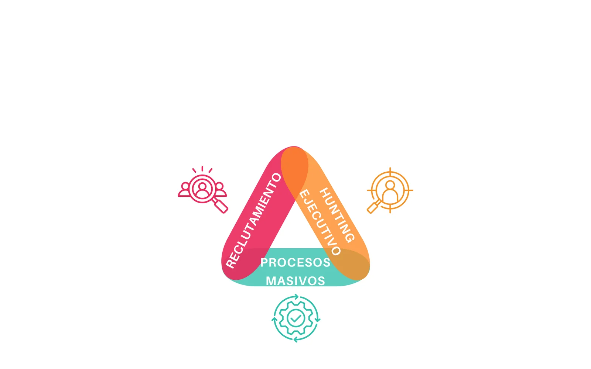
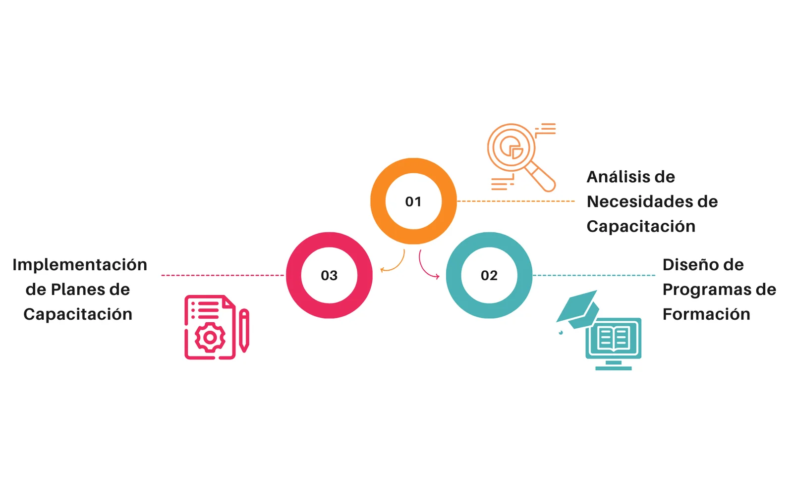
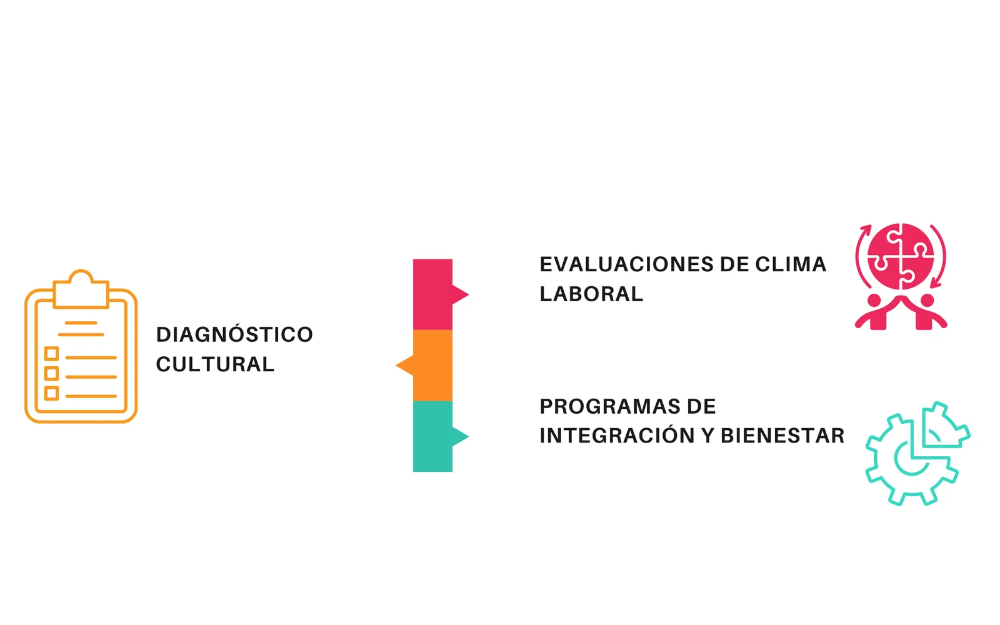
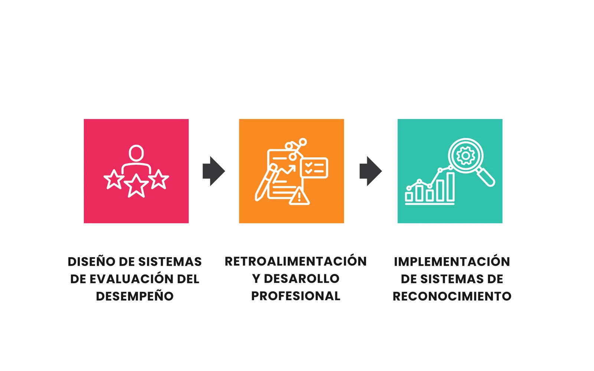
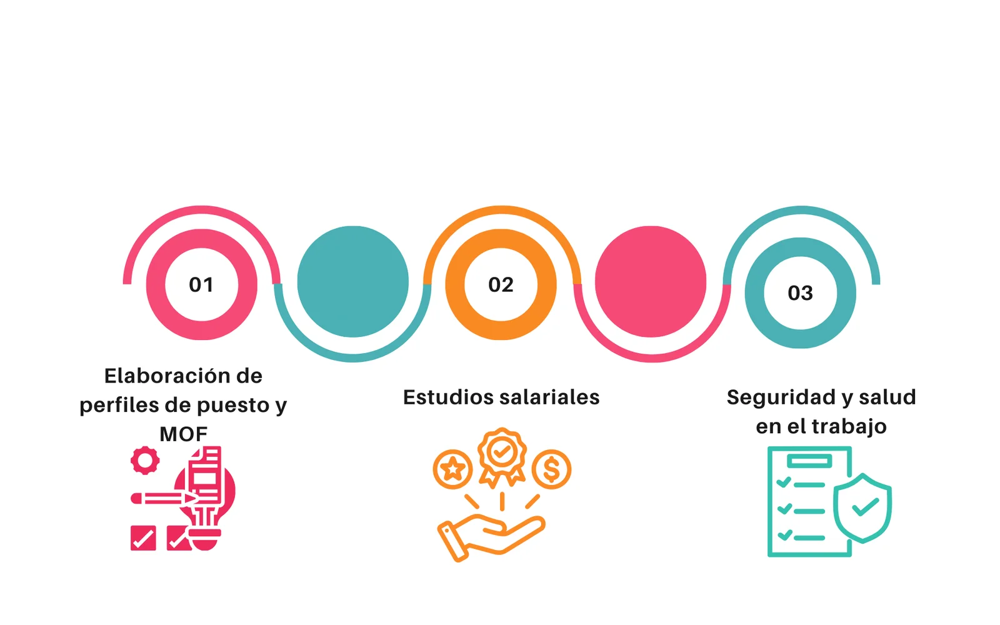
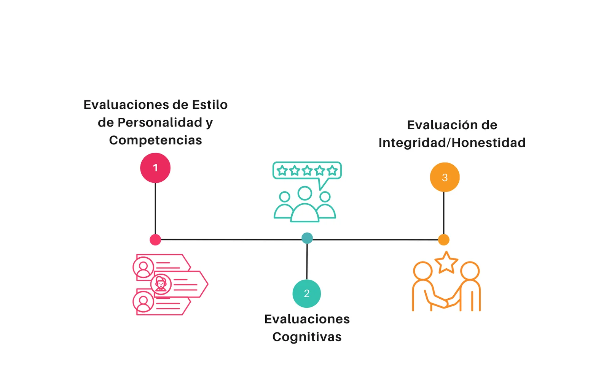
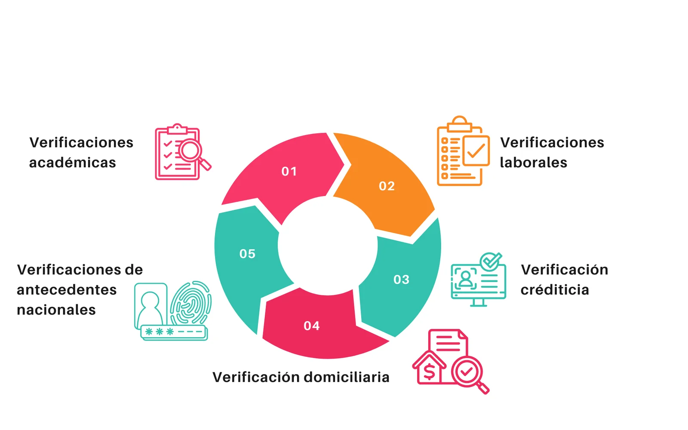

Reclutamiento y Selección de Personal
Ofrecemos procesos personalizados para cada cliente, ajustando la búsqueda según el perfil solicitado a fin de identificar el talento que cumpla con las expectativas de la organización.

Ofrecemos procesos personalizados para cada cliente, ajustando la búsqueda según el perfil solicitado a fin de identificar el talento que cumpla con las expectativas de la organización.

Realizamos programas de capacitación diseñados para potenciar las habilidades y competencias de los equipos y líderes dentro de su organización, favoreciendo la retención del talento y mejorando su desempeño.

Nuestro servicios está diseñado para evaluar y comprender el ambiente de trabajo y los valores que guían el comportamiento en su organización. Este servicio proporciona una visión profunda de cómo los colaboradores perciben su entorno laboral y cómo estos valores se alinean con los objetivos estratégicos de su organización.

Nuestro servicio está diseñado para ayudar a las organizaciones a medir y mejorar el rendimiento de sus colaboradores, facilitando la toma de decisiones estratégicas sobre desarrollo, promoción y mapas de talento.

Nuestro servicio está diseñado en proporcionar a las organizaciones soluciones prácticas y eficientes que optimizan la administración y gestión de la gestión del talento humano. Nuestro enfoque es integral y ofrecer herramientas de gestión personalizadas de acuerdo a la necesidad de nuestros clientes.

Nos permite conocer datos relevantes sobre el candidato y su adaptación al cargo, considerando sus características individuales, habilidades, destrezas, competencias. Entregamos un informe detallado, el mismo que ayuda en la toma de decisiones sobre contratación, promociones internas, cuadros de sucesión, planes de capacitación, políticas de contratación e incentivos, entre otros aspectos.

Contamos con herramientas que permiten conocer datos relevantes sobre el candidato, a través de verificación de antecedentes nacionales, laborales, académicos, domiciliarios, crediticios, entre otros; permitiendo predecir su desempeño o adecuación al cargo al que postula, disminuyendo el riesgo de contratación y cumpliendo con las políticas de Recursos Humanos.